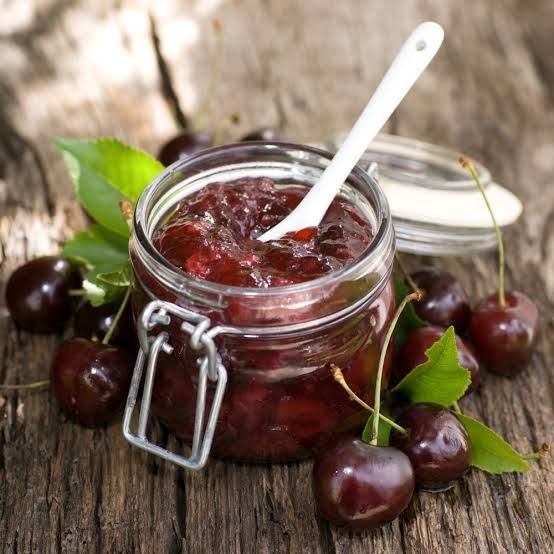

Confiture de
Cerises
Noires de Céret


⟹ Confitures Artisanales ⟸
L'histoire de la confiture de cerises à Céret est indissociable de celle du bassin fruitier du Vallespir. Protégée par les reliefs pyrénéens et ouverte aux influences méditerranéennes, la région bénéficie d'un climat qui favorise une maturation précoce. Cette précocité a fait de Céret l'un des noms les plus célèbres de la cerise française et a donné naissance à tout un patrimoine de conservation domestique : confitures, fruits au sirop et autres préparations permettant de prolonger une récolte brève et abondante.

L'épisode de 1932 est particulièrement bien documenté. Cette année-là, des cerises cérétanes furent transportées par avion jusqu'à Paris, à une époque où l'aviation commerciale et le transport rapide des primeurs avaient encore valeur d'événement. L'opération contribua à installer durablement l'image de Céret comme terre des « premières cerises » et transforma un avantage agricole — la précocité — en véritable symbole territorial.
Autour de cette production fraîche s'est naturellement développée la transformation. La confiture répond à une logique ancienne et très concrète : utiliser les fruits mûrs, prolonger la saison et concentrer leurs arômes grâce au sucre et à la cuisson. Les cerises sombres donnent des confitures à la couleur profonde et au goût intense ; selon les familles et les producteurs, les variétés, les proportions de sucre et les temps de cuisson diffèrent.
La cerise ne relève pas seulement de l'économie agricole : elle appartient à l'identité de Céret. La Fête de la Cerise, les marchés, les producteurs et les artisans entretiennent cette image collective. L'envoi présidentiel, toujours renouvelé à l'époque contemporaine, constitue l'un des rites les plus visibles de cette réputation nationale.
Depuis 1932, les premières cerises de Céret sont offertes chaque année au président de la République.
Ville de Céret — documentation municipale et patrimonialeLa confiture de cerises de Céret peut ainsi se lire comme la forme conservée d'un paysage et d'une histoire agricole : celle d'un terroir précoce, d'une production qui s'affirme au XXe siècle, d'une notoriété construite par les marchés et les transports modernes, puis d'un fruit devenu emblème culturel du Vallespir.
Repères documentaires : Ville de Céret, documents municipaux sur l'histoire et le patrimoine de la commune ; archives de presse de 1932 relatives à l'envoi des premières cerises au président de la République.
Confiture allégée en sucre : une version plus légère, adaptée aux préparations utilisant de la pectine.
Confiture épicée : quelques familles y ajoutent une pointe de cannelle ou de thym pour varier les saveurs.
Confiture au Banyuls : un trait de vin doux naturel incorporé en fin de cuisson, pour une version plus gourmande.
Le marché couvert de Céret, où producteurs et confituriers locaux proposent leurs préparations artisanales.
Fête de la Cerise de Céret au printemps, moment fort pour découvrir et acheter la confiture directement auprès des producteurs.
Épiceries fines et fermes du Vallespir qui commercialisent la confiture toute l'année.